Allah, mon Créateur
Découvre Qui est Allah, Ses beaux noms et Ses merveilles.
6 aventuresAvec Sirâj, la petite lanterne curieuse, les enfants explorent 12 mondes d'aventures, de quiz et de jeux. Et une mémoire intelligente repose chaque leçon au bon moment, pour qu'elle ne s'oublie plus.
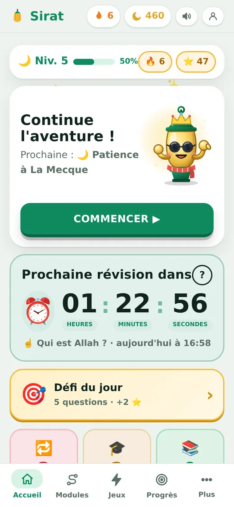
Des fondements de la foi aux belles manières : chaque monde est une suite d'aventures courtes. Quelques mini-leçons illustrées, puis des questions variées pour vérifier ce qu'on a retenu.
Découvre Qui est Allah, Ses beaux noms et Ses merveilles.
6 aventuresSa vie, de sa naissance à La Mecque jusqu'à Médine.
6 aventuresLes messagers d'Allah et leurs belles histoires.
6 aventuresLes amis du Prophète ﷺ qui ont vécu à ses côtés.
5 aventuresLes cinq bases de la pratique d'un musulman.
6 aventuresApprends à te préparer et à prier étape par étape.
6 aventuresLe livre d'Allah : sa révélation, ses sourates, ses messages.
5 aventuresCe que croit le musulman : Allah, les anges, les livres, les prophètes, le Jour dernier, le destin.
5 aventuresÊtre honnête, poli, généreux et gentil, comme le Prophète ﷺ.
8 aventuresLe calendrier de la lune, le Ramadan et les deux Aïd.
5 aventuresLa Mecque, Médine, Jérusalem et la mosquée de mon quartier.
4 aventuresLes petites phrases et douas pour chaque moment de la journée.
6 aventures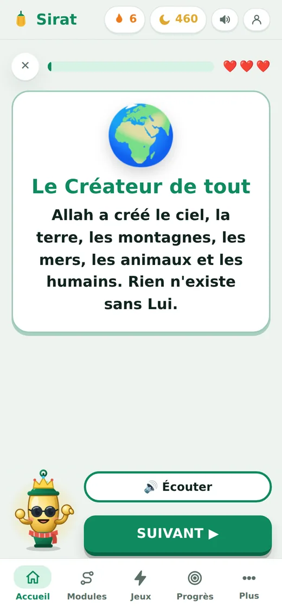
Chaque aventure commence par quelques mini-leçons illustrées. Sirâj les lit à haute voix, avec les mots arabes à écouter : pas besoin de savoir bien lire pour apprendre.
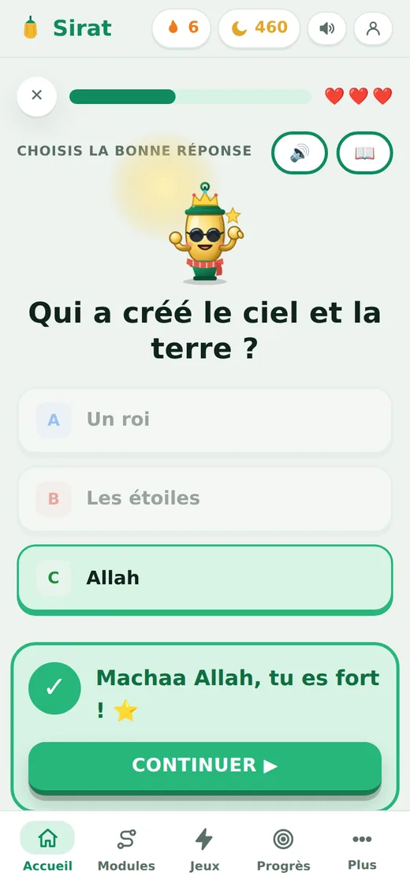
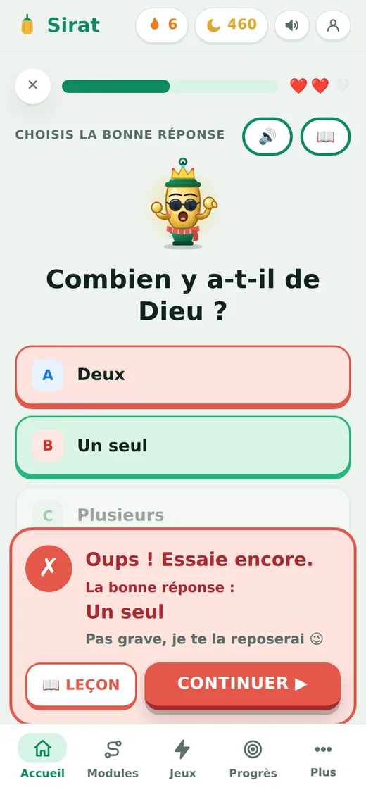
Choix multiples, vrai ou faux, remise dans l'ordre, association… Une bonne réponse, c'est bravo et une étoile. Une mauvaise réponse ? La bonne réponse s'affiche tout de suite et la question revient un peu plus tard.
Les trois cœurs comptent les erreurs, sans jamais bloquer la partie.
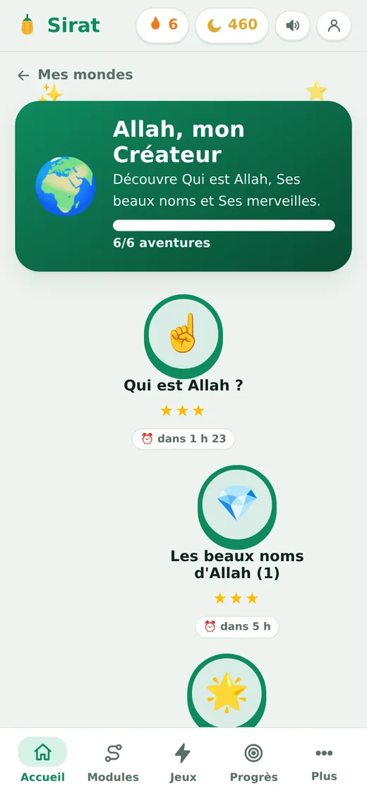
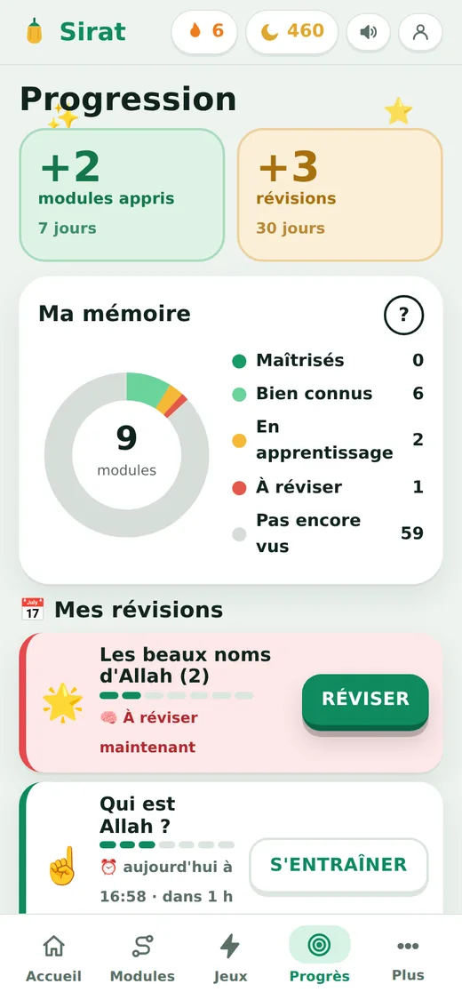
Chaque aventure terminée devient un module. Sirâj te le repose 2 heures, 1 jour, 3 jours, 1 semaine… plus tard. Un compte à rebours dit quand revenir, et l'écran Progression montre ce qui est déjà bien retenu.
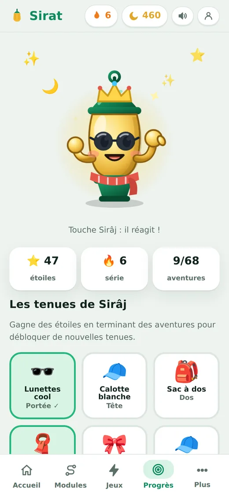
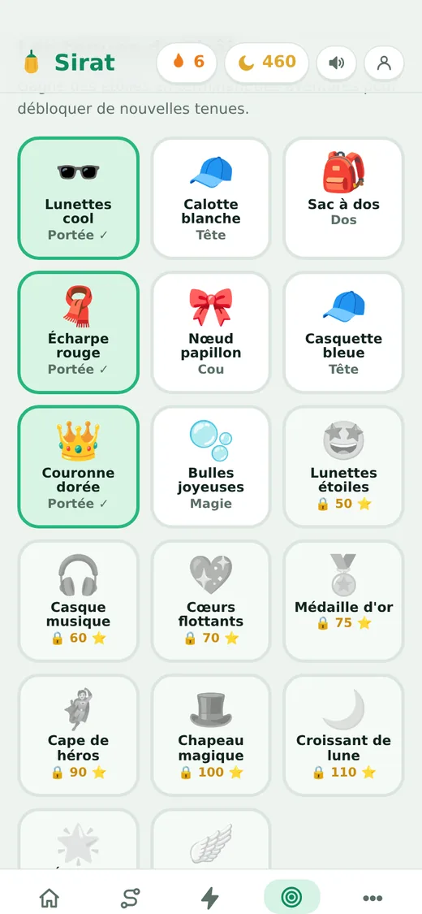
Les étoiles gagnées débloquent 17 tenues pour Sirâj et 25 badges. Tout est visible dès le départ : on voit ce qu'on pourra obtenir, même sans l'avoir encore.
On oublie vite ce qu'on vient d'apprendre, sauf si on le revoit au bon moment. Sirat repose chaque module à intervalles de plus en plus longs.
Des jeux pour réviser en s'amusant, des sourates à apprendre et un dico de mots arabes qui se remplit au fil des aventures.
Le jeu de mémoire (retrouve les paires mot et sens) et le vrai ou faux éclair en 60 secondes.
Al-Fatiha, Al-Ikhlas, Al-Falaq, An-Nas, Al-Kawthar et Al-'Asr : l'arabe, la phonétique, le sens, puis le test du mot manquant.
Le dico de Sirâj se débloque au fil des aventures. On touche un mot pour l'écouter.
Cinq questions par jour, qui reprennent les erreurs de la veille, pour une étoile bonus.
Les questions ratées sont gardées de côté pour être revues quand on veut.
Chaque leçon et chaque question est lue par Sirâj, pour apprendre même quand on ne lit pas encore bien.
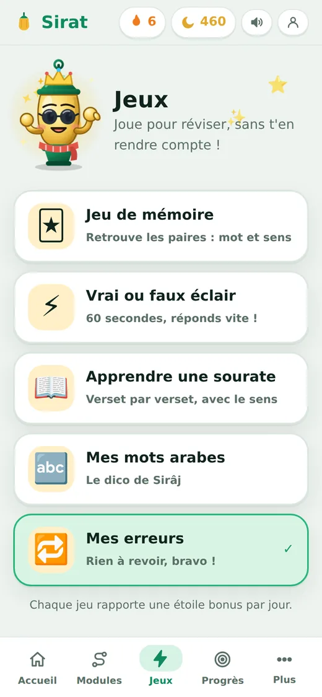
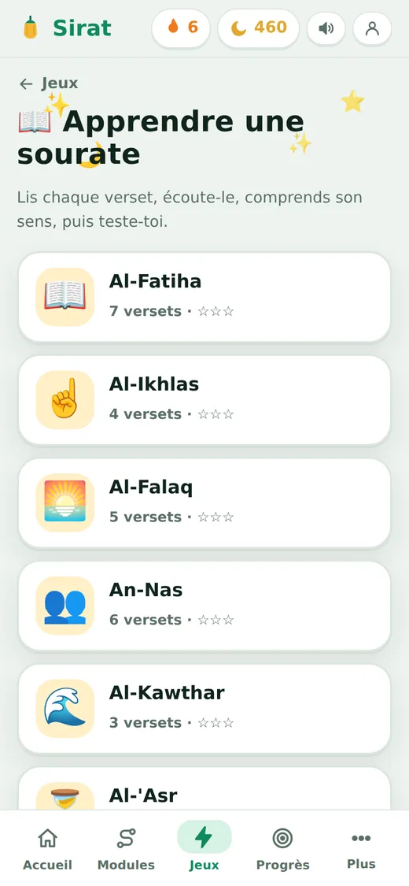
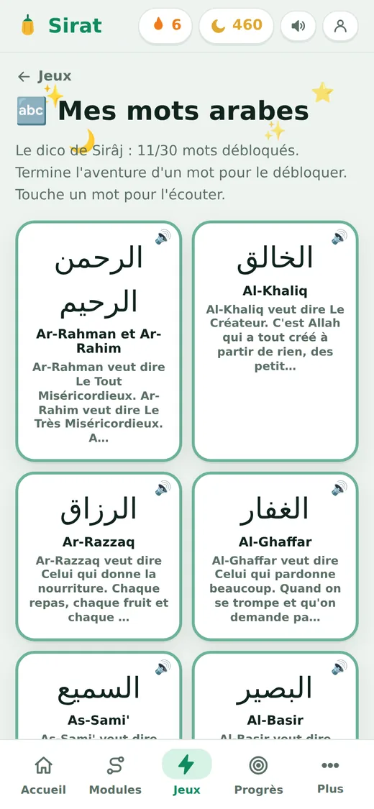
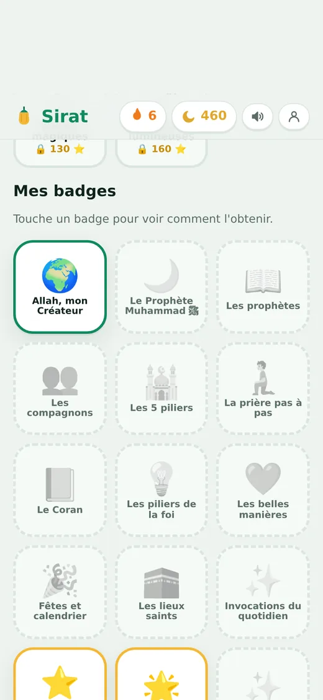
Ses yeux suivent ton doigt, il réagit quand on le touche, s'endort si on l'oublie et fait un câlin quand on reste appuyé. Il lit tout à voix haute et encourage à chaque réponse.
Avec les étoiles gagnées, on débloque 17 tenues. Voici un petit aperçu :
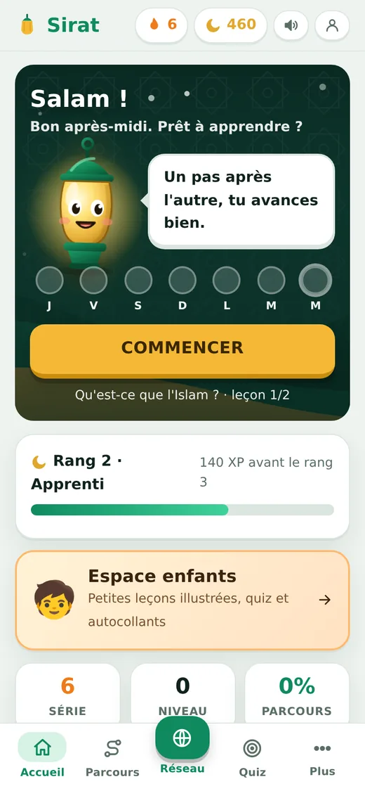
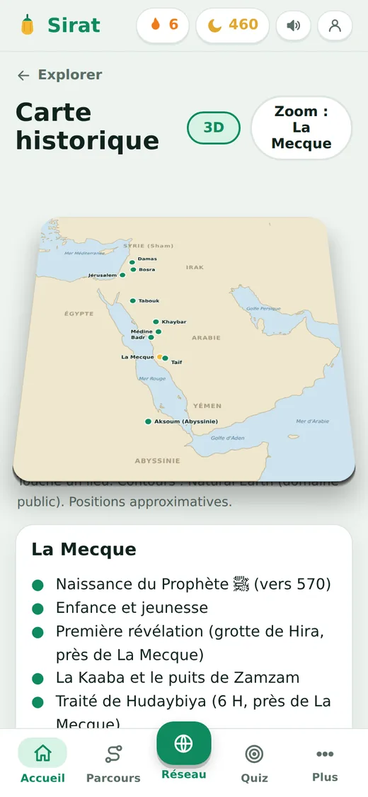
Le parcours des ados et des adultes avance niveau par niveau : fondamentaux, vie du Prophète ﷺ, prophètes, compagnons, histoire après le Prophète ﷺ, Coran et pratique.
Sirat est conçu pour que les enfants apprennent à leur rythme, avec ou sans vous à côté d'eux.
Pas de publicité et pas d'achats intégrés.
L'application fonctionne sans compte : la progression reste sur l'appareil. Un compte permet de la retrouver partout.
Il n'y a ni messagerie ni commentaires. Seul un classement facultatif affiche un prénom et une initiale, et il se désactive dans le profil.
Les parcours s'appuient sur des sources classiques (Coran, Bukhârî, Muslim, Sîra d'Ibn Hichâm…). Une relecture par des personnes qualifiées est prévue avant la grande diffusion ; toute remarque est la bienvenue.
Oui. L'application est gratuite, sans publicité et sans achat intégré.
Le parcours enfants est pensé pour les enfants, idéalement accompagnés d'un adulte au début : tout est lu à voix haute. Le parcours des grands s'adresse aux ados et aux adultes. La création d'un compte est réservée aux personnes de 13 ans ou plus ; les plus jeunes peuvent utiliser l'application sans compte, ou avec le compte d'un parent.
Non. Sans compte, la progression reste sur l'appareil. Avec un compte (Google ou e-mail), on la retrouve sur tous ses appareils et on peut apparaître, si on le souhaite, dans le classement.
Chaque aventure terminée devient un module que Sirâj repose 2 heures, 1 jour, 3 jours, 7 jours, 14 jours, 30 jours puis 90 jours plus tard. Réussir repousse la prochaine révision ; se tromper ramène le module plus vite.
Rien de grave : la bonne réponse s'affiche, Sirâj encourage, et la question est reposée un peu plus tard. Les erreurs sont gardées dans « Mes erreurs » pour être revues quand on veut.
Dans le navigateur de n'importe quel téléphone, tablette ou ordinateur. On peut aussi l'ajouter à l'écran d'accueil pour l'ouvrir comme une application. Les versions App Store et Google Play sont en préparation.
Ce sont des voix de synthèse, générées par ordinateur et choisies pour être claires et chaleureuses. Les mots arabes peuvent aussi être lus par la voix arabe de l'appareil quand elle existe.
Écrivez-nous : CONTACT_EMAIL. Chaque remarque nous aide à améliorer Sirat.
Ouvre l'application : on peut commencer tout de suite, sans compte.
Ouvrir l'application Les applications App Store et Google Play sont en préparation.